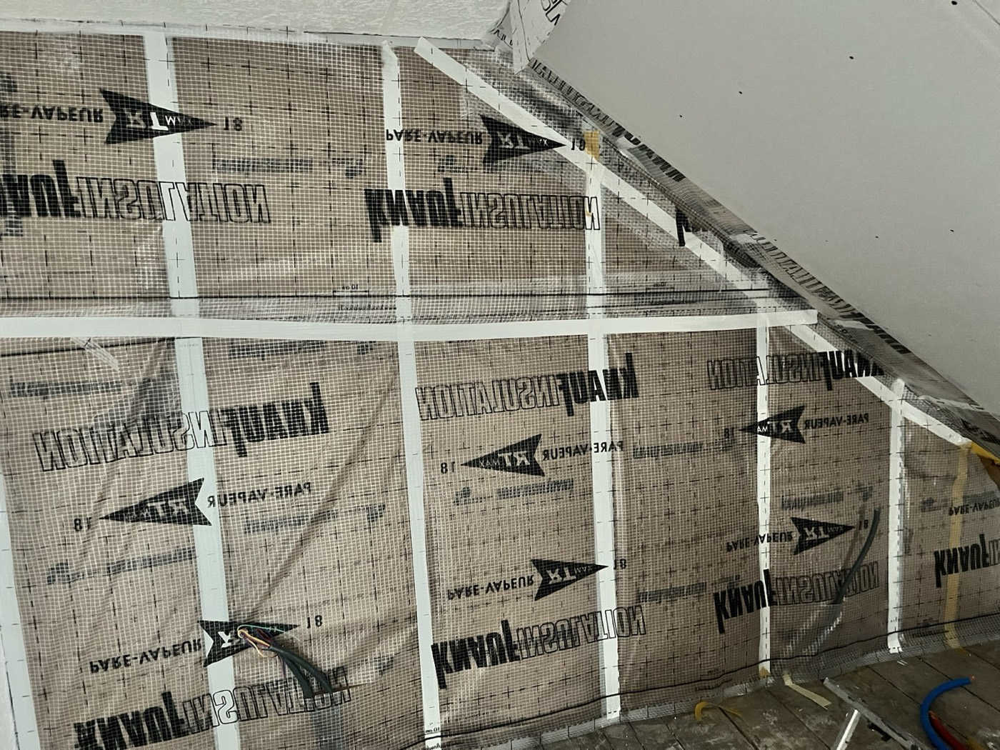
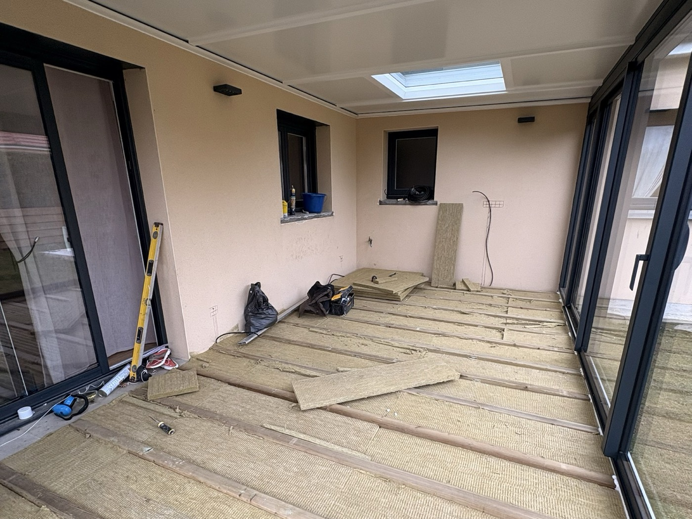

Nos réalisations · Isolation
Isolation
BATIORNE réalise vos travaux d’isolation thermique, phonique et des sols pour un meilleur confort, des économies d’énergie et un résultat durable.



Votre maison aussi peut être mieux isolée
Visite sur place et devis gratuit, sans engagement.